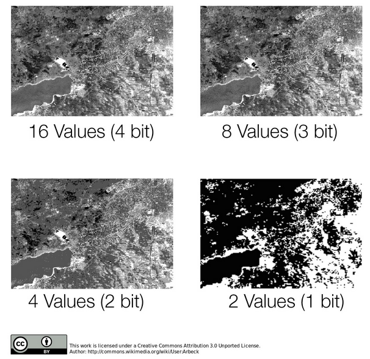
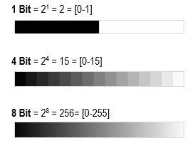
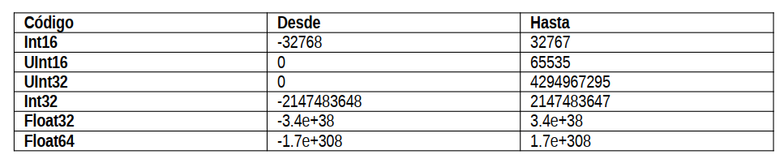

Otra característica importante de los datos ráster en el contexto de su manejo en un software SIG, es la resolución radiométrica de estos.
Cada píxel que compone una imagen, puede asumir una cantidad de valores específica dependiendo de su resolución radiométrica, por ejemplo una imagen de 8 bits tiene 256 niveles de brillo (Richards y Jia, 2006).

En términos de interpretación visual, se habla de resolución radiométrica para distinguir detalles en una escala de grises, o profundidad de los colores, como se observa en la siguiente imagen:

Ilustración: LABGRS, 2020.
Los softwares tienen formas de decodificar la cantidad de información que tienen los ráster almacenados en sus celdas. Si son números enteros, positivos, negativos, decimales, cuantos dígitos etc. En la siguiente tabla podemos ver el código de almacenamiento y el rango de valores que es capaz de almacenar:

Ilustración: LabGRS
Int hace referencia a valores enteros (interger). El prefijo U indica que los valores no tienen signo (unsigned) es decir, que solamente son posivitos, y float corresponde a los valores flotantes que continen decimales positivos y/o negativos.